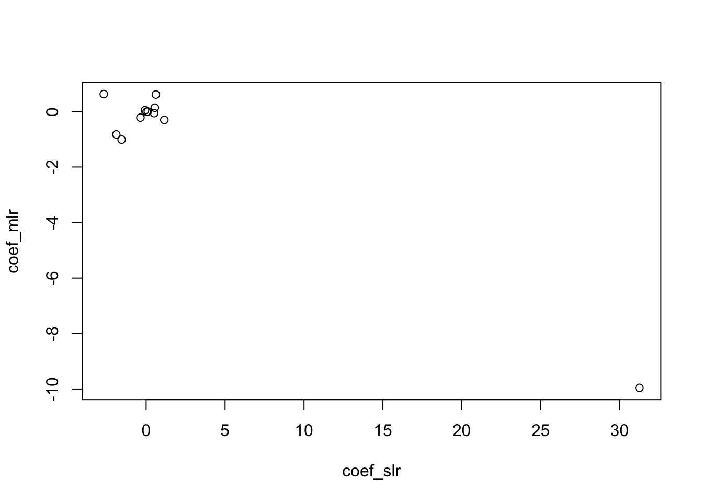

library(ISLR2)Exercise 3: Multiple Linear Regression Solution
Note
Exercises are for practice purpose only.
Multiple Linear Regression
- This problem involves the
Bostondata set. We now try to predict per capita crime rate using the other variables in this data set. In other words, per capita crime rate is the response, and the other variables are the predictors.
- For each predictor, fit a simple linear regression model to predict the response. Describe your results. In which of the models is there a statistically significant association between the predictor and the response? Create some plots to back up your assertions.
pval <- coef_slr <- rep(0, 12)
names(pval) <- names(coef_slr) <- names(Boston[-1])
for (i in 1:12) {
slr <- lm(Boston$crim ~ Boston[[i+1]])
summ <- summary(slr)
pp <-
coef_slr[i] <- summ$coefficients[2, 1]
pval[i] <- summ$coefficients[2, 4]
}
pval[pval < 0.05] zn indus nox rm age dis
5.506472e-06 1.450349e-21 3.751739e-23 6.346703e-07 2.854869e-16 8.519949e-19
rad tax ptratio lstat medv
2.693844e-56 2.357127e-47 2.942922e-11 2.654277e-27 1.173987e-19 pval[pval > 0.05] chas
0.2094345 - Fit a multiple regression model to predict the response using all of the predictors. Describe your results. For which predictors can we reject the null hypothesis \(H_0 : \beta_j = 0\)?
mlr <- lm(crim ~., data = Boston)
(summ_mlr <- summary(mlr))
Call:
lm(formula = crim ~ ., data = Boston)
Residuals:
Min 1Q Median 3Q Max
-8.534 -2.248 -0.348 1.087 73.923
Coefficients:
Estimate Std. Error t value Pr(>|t|)
(Intercept) 13.7783938 7.0818258 1.946 0.052271 .
zn 0.0457100 0.0187903 2.433 0.015344 *
indus -0.0583501 0.0836351 -0.698 0.485709
chas -0.8253776 1.1833963 -0.697 0.485841
nox -9.9575865 5.2898242 -1.882 0.060370 .
rm 0.6289107 0.6070924 1.036 0.300738
age -0.0008483 0.0179482 -0.047 0.962323
dis -1.0122467 0.2824676 -3.584 0.000373 ***
rad 0.6124653 0.0875358 6.997 8.59e-12 ***
tax -0.0037756 0.0051723 -0.730 0.465757
ptratio -0.3040728 0.1863598 -1.632 0.103393
lstat 0.1388006 0.0757213 1.833 0.067398 .
medv -0.2200564 0.0598240 -3.678 0.000261 ***
---
Signif. codes: 0 '***' 0.001 '**' 0.01 '*' 0.05 '.' 0.1 ' ' 1
Residual standard error: 6.46 on 493 degrees of freedom
Multiple R-squared: 0.4493, Adjusted R-squared: 0.4359
F-statistic: 33.52 on 12 and 493 DF, p-value: < 2.2e-16- How do your results from (a) compare to your results from (b)? Create a plot displaying the univariate regression coefficients from (a) on the x-axis, and the multiple regression coefficients from (b) on the y-axis. That is, each predictor is displayed as a single point in the plot. Its coefficient in a simple linear regression model is shown on the x-axis, and its coefficient estimate in the multiple linear regression model is shown on the y-axis.
coef_mlr <- summ_mlr$coef[-1, 1]
plot(coef_slr, coef_mlr)